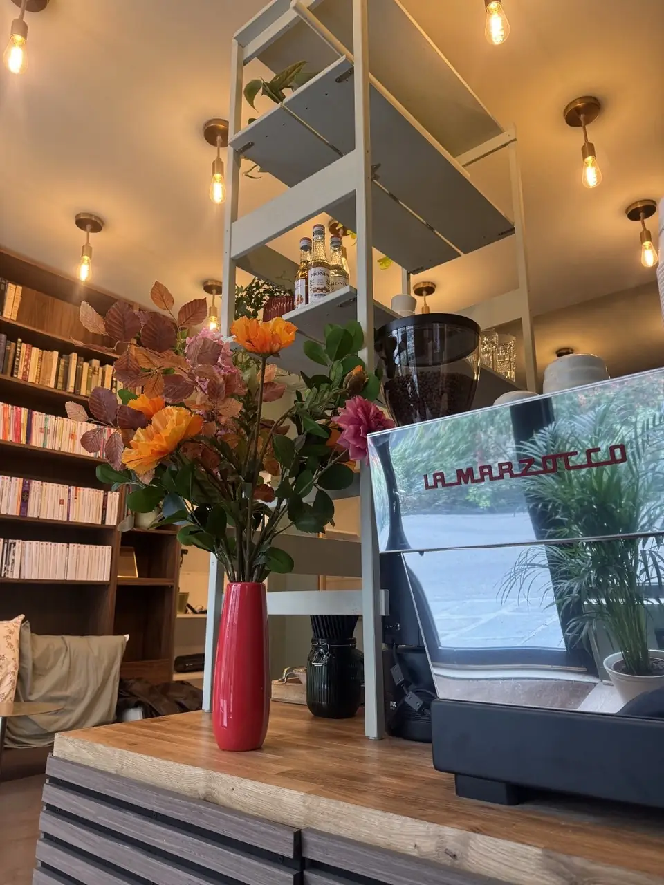
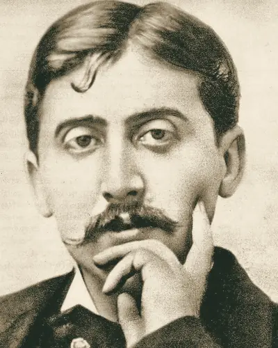
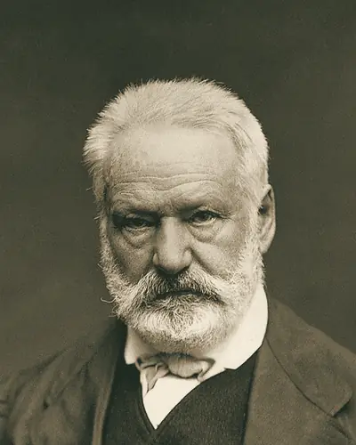
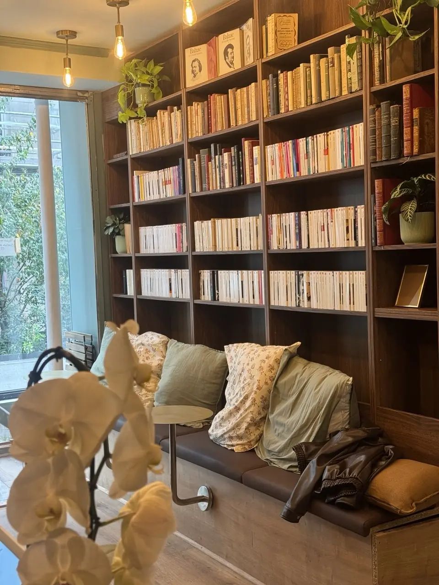

Le café
Un arabica Yellow Bourbon du Brésil, torréfié chaque semaine pour un goût parfait. Un matcha premium de Kagoshima et nos madeleines Combray, à savourer au comptoir ou sur la banquette, un livre à la main.
Voir la carteIls vous attendent
Balzac, Hugo, Zola, Proust : les grands classiques côtoient les poches d'aujourd'hui sur nos rayonnages.
-

Marcel Proust 1871 – 1922 Longtemps, je me suis couché de bonne heure.
Du côté de chez Swann -
Honoré de Balzac 1799 – 1850 À nous deux maintenant !
Le Père Goriot -

Victor Hugo 1802 – 1885 Ceci tuera cela.
Notre-Dame de Paris -
Émile Zola 1840 – 1902 La vérité est en marche, et rien ne l'arrêtera.
J'accuse… !

Les livres
Les rayonnages sont en libre accès : prenez un livre, installez-vous sur la banquette et lisez le temps de votre café.
Prêt, achat et échange : les modalités seront précisées très bientôt.
Infos pratiques
Accès
- M 13 Liège, 1 min à pied
- M 3 Europe, 4 min à pied
- Gare Saint-Lazare, 7 min à pied
Horaires
Horaires communiqués très prochainement.